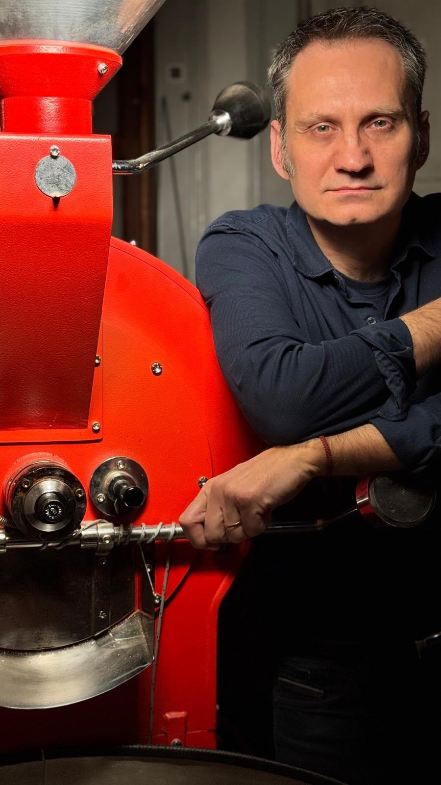

Ömer Aydın
is a coffee roaster and educator based in İzmir, Türkiye, and an Authorized SCA Trainer and Q Instructor. Coffee education without borders.
Upcoming training Watch
Watchthe film
Explore the courses
Course format, certification and availability are confirmed for each offering.
-
Barista Skills
-
Roasting
-
Sensory Skills
-
Brewing
-
Q Grader
Training dates
International course dates will be announced here as they are confirmed.
Your instructor
Coffee roaster and educator based in İzmir, Türkiye. My approach connects coffee science, sensory experience and practical skills through professional coffee education.
- Authorized SCA Trainer
- Q Instructor
- Zurich University of Applied Sciences (ZHAW) · CAS Coffee Excellence

Original Research & Methodology
Beyond the Roast Curve
Listening to Coffee Development
Every roast tells a story beyond its temperature curve. Through the acoustic stages of first crack, I investigate how sound can provide additional information about roasting progression and help evaluate roast consistency.
- Sound
- Acoustic Stages
- Roast Consistency
- Professional Education
What learners say
Excerpts from the public course reviews on coffeenutz.net.